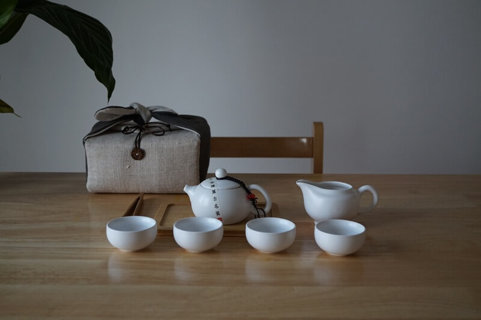
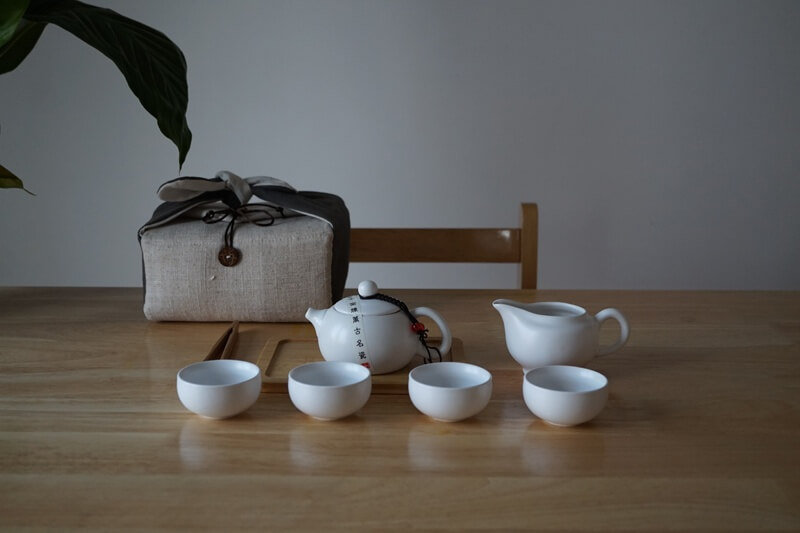
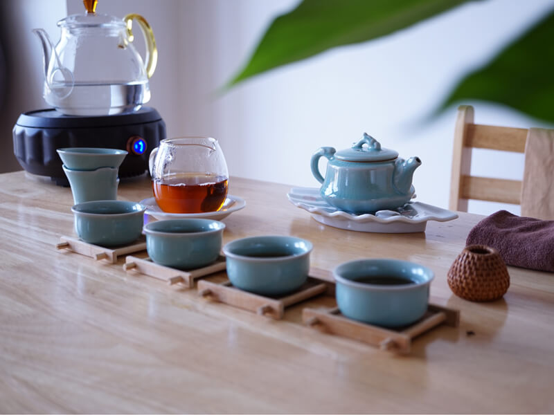

August Tea


 

From dark and boozy, to bright and dreamy, August is like no tea you've ever tasted before. August tea is wild, intense, and radically different.
Taste our top ten teas
August is designed to please all five senses. Our tea has wild and intense flavors you might not expect in tea. They are inspired by cocktails, pastry, perfume, and modern cuisine. We use beautiful, whole leaf tea and natural ingredients you can see, touch, smell and taste. Alongside tasting notes, you'll find mood notes inspired by art, music, cinema and natural landscapes. Our brewing method is designed to maximize flavor and help you create your own modern ritual for every tea.


August is a small, family-run company. We are committed to making better tea, and to making things better in our world, as a product, a brand, and a business. Our team is proudly comprised of individuals of all colors, identities, and needs. While we are a small company, an important part of August's growth is finding opportunities to improve quality of life for our team and in our large and diverse Los Angeles community.